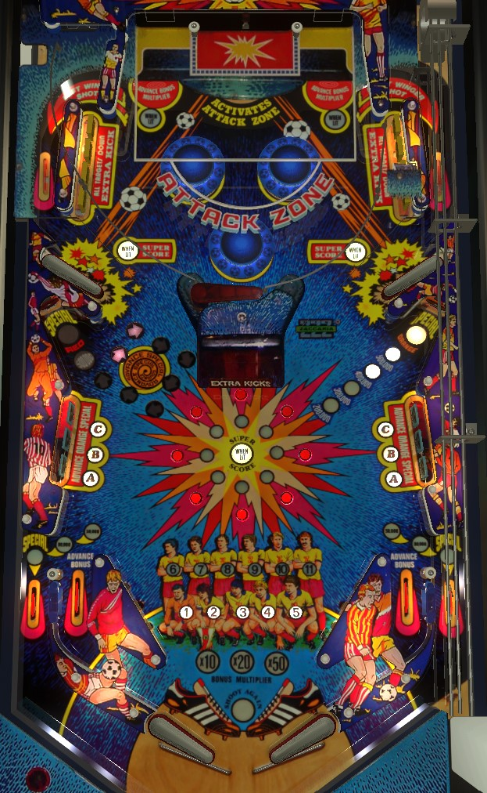

Score Goals by shooting the pinball to the sinkhole in the back of the game to access the upper playfield, then shooting past the moving goalie post in the back center of the upper playfield. Goals make progress toward the Red Special, which can be worth an extra ball, a free game, or 4,500,000 points. Completing banks of drop targets or standup targets add Extra Kicks, allowing you to score additional goals in a single trip to the upper playfield. Lighting all 8 center rollover buttons starts Super Score, where bumper, drop target, and standup target score is multiplied by 10 for 15 seconds.
Soccer Kings has no skill shot. The plunge puts the ball in the upper right side lane, where it feeds the upper right flipper for a shot at the Attack Zone sinkhole.
Use the upper flippers to put the ball into the Attack Zone sinkhole on the back of the main playfield to access the upper playfield. The upper playfield has a single (left) flipper; there is no way to drain the ball from the upper playfield. On the upper playfield, shoot toward the holes in the back of the game. Shooting into the center section between the fixed posts and past the moving goalie post scores a Goal, and shooting to the sides is a Miss. After a Goal or a Miss, if you have no Extra Kicks left, the ball is returned to the main playfield via the center saucer; listen for the announcer to say "careful" to know the kickout is coming. If you do have Extra Kicks remaining, the number of Extra Kicks (on the center playfield display) will be decreased by 1 and you get a chance to score another Goal. Extra Kicks are earned by completing any bank of drop targets or standup targets.
After 6, 10, 13, or 17 Goals (operator adjustable), the Red Special standup target on the left will be lit. Depending on operator settings, hitting this target when lit scores a free game, an extra ball, 4,500,000 points, or a "superbonus", which lights the word Superbonus on the backglass and does nothing else (used in some places to signify an earned free drink, or similar). The Red Special target scores 50,000 points when not lit.
Each target down in either bank scores 3,000 points and a bonus advance. Completing a bank of drop targets does three things:
During Super Score, each drop target down scores 30,000 points instead of 3,000.
Hitting any ABC standup target, whether lit or not, scores 10,000 points and a bonus advance. Hitting a lit target unlights that letter. Unlighting all ABC targets will relight them and advance the Orange Special target on the right to 200,000, then 300,000, then 400,000, then 500,000, then Orange Special, which can be worth a free game, an extra ball, 1,000,000 points, or "superbonus". If the Orange Special target is lit for points, that value can be collected repeatedly, but if the Orange Special itself is lit, hitting the target will completely reset the sequence, so consider if it is worthwhile to advance the target to 500,000 points and whale on it rather than advancing it to the proper Orange Special.
Two operator settings have signficant impact on how the ABC targets work:
The Orange Special target awards 50,000 points if it is not lit at all. ABC standup targets score 100,000 points each if Super Score is running.
Press one of the small red rollover buttons in the center of the playfield to score 5,000 points and light one of the 8 lights surrounding the Super Score When Lit insert. Pressing all 8 buttons, therefore lighting all 8 lights, starts Super Score. During Super Score, the value of ABC standup targets, drop targets, and bumpers is multiplied by 10 for 15 seconds. This means drop targets score 30,000 each, ABC standups score 100,000 each, and pop bumpers score 20,000 each. A siren-like noise plays to indicate that Super Score is running.
Soccer Kings has a conventional in/out lane setup. In lanes score 5,000 points and a bonus advance. Out lanes initially score 20,000 points; each out lane can independently have its value raised to 50,000, then 80,000, then White Special through completions of the drop target bank on the same side of the table as that out lane. White Special can score 500,000 points or an extra ball.
Base bonus is advanced by any drop target, ABC standup target, or in lane. Bonus multiplier is advanced in the sequence 10x-20x-50x by completing a drop target bank, then shooting the lit single standup target to the side of the Attack Zone sinkhole near the back of the main playfield. Max bonus is 50x 20,000 = 1,000,000 points. There is no mid-ball bonus collect and no holdover for the base bonus or multiplier.
On the final ball of the game (e.g. ball 3 of a 3-ball game), the ball in play display will read "Game Time Bonus: 10" as soon as the ball enters the playfield. During this final ball, every 3rd switch hit anywhere on the playfield adds 1 to the Game Time Bonus. Immediately after this final normal ball drains, the Game Time Bonus begins. Game Time Bonus is a timed bonus ball with unlimited ball save for as long as there is time on the clock.
If you drain during Game Time Bonus: a new ball will be fed to the shooter lane and play continues with no penalty other than the clock continuing to run.
If you tilt during Game Time Bonus: the entire playfield will go dark and the ball will be allowed to drain, with no further points being scored. The entire end of ball bonus including multiplier will be reset without being scored. If there is still time on the clock when the ball reaches the out hole, play will continue.
When Game Time Bonus ends: the announcer will count down your final 10 seconds on the clock. When the clock hits 0, all playfield lights go dark and the ball is allowed to drain, with no further points being scored. After the ball reaches the out hole, your end of ball bonus is scored, and the game either enters Game Over mode or transitions to the next player, who will play their final normal ball immediately followed by their Game Time Bonus ball.
If you collect an extra ball during Game Time Bonus: the clock immediately stops, and the previous rule of "every 3rd switch adds 1 to the clock" applies. When the ball drains and the extra ball is used, the Game Time Bonus ball will continue.
Remember that all players play their Game Time Bonus ball immediately after their final standard turn, and that the Game Time Bonus clock continues to run while the ball is in the shooter lane waiting to be plunged. Note as well that "seconds" of Game Time Bonus may not be equivalent to real-life seconds.